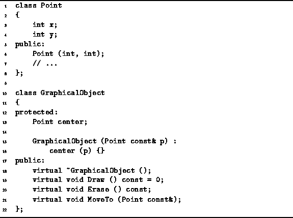
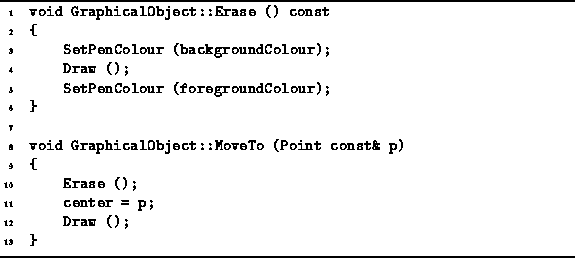
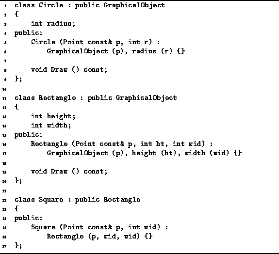

Data Structures and Algorithms
with Object-Oriented Design Patterns in C++
Data Structures and Algorithms
with Object-Oriented Design Patterns in C++Polymorphism literally means ``having many forms.'' Polymorphism arises when a set of distinct classes share a common interface because they are all derived from the same base class(es). Because the derived classes are distinct, their implementations may differ. However, because the derived classes share a common interface, instances of those classes are used in exactly the same way.
Consider a program for creating simple drawings. Suppose the program provides a set of primitive graphical objects, such as circles, rectangles and squares. The user of the program selects the desired objects, and then invokes commands to draw, to erase, or to move them about. Ideally, all graphical objects support the same set of operations. Nevertheless, the way that the operations are implemented varies from one object to the next.
We implement this as follows: First, we define a GraphicalObject class which represents the common interface shared by all graphical objects. Then, we derive from GraphicalObject classes to represent circles, rectangles and squares.
Consider the GraphicalObject class declared in Program  .
This class has a single member variable, center,
which is an instance of the Point class
and which represents the position in the drawing
of the center-point of the graphical object.
The constructor for the GraphicalObject class takes
as its lone argument a reference to a Point and
initializes the center member variables accordingly.
.
This class has a single member variable, center,
which is an instance of the Point class
and which represents the position in the drawing
of the center-point of the graphical object.
The constructor for the GraphicalObject class takes
as its lone argument a reference to a Point and
initializes the center member variables accordingly.

Program: Point and GraphicalObject Class Definitions
In addition to the constructor and destructor, three member functions are declared. The Draw routine draws the object, the Erase routine erase the object, and the MoveTo routine moves the object to a new position.
Program shows a possible implementation
for the Erase function:
In this case we assume that the image is drawn using an imaginary pen.
Assuming that we know how to draw a graphical object,
we can erase the object by changing the color of the pen
so that it matches the background color
and then redrawing the object.

Program: GraphicalObject Class MoveTo and Erase Member Function Definitions
Once we can erase an object as well as draw it,
then moving it is easy.
Just erase the object,
change its center point,
and then draw it again.
This is how the MoveTo function shown in
Program is implemented.
We have seen that the GraphicalObject class provides implementations for the Erase and MoveTo member functions. However, the GraphicalObject class does not provide an implementation for the Draw function. Why not? Because until we know what kind of object it is, we cannot possibly know how to draw it!
Consider the Circle class defined in Program .
This class is derived from GraphicalObject.
Therefore, it inherits the member variable center
and the member functions Erase and MoveTo.
The Circle class adds an additional member variable,
radius,
and it overrides the Draw routine.
The body of the Draw routine is not shown in Program .
However, we shall assume that it draws a circle with the given radius
and center point.

Program: Circle, Rectangle and Square Class Definitions
Using the Circle class defined in Program
we can write code like this:
Circle c (Point (0, 0), 5); c.Draw (); c.MoveTo (Point (10, 10)); c.Erase ();This code sequence declares a circle object with its center initially at position (0,0) and radius 5. The circle is then drawn, moved to (10,10), and then erased.
Program also defines
the classes Rectangle and Square.
The Rectangle class is also derived from GraphicalObject.
Therefore, it inherits the member variable center
and the member functions Erase and MoveTo.
The Rectangle class adds two additional member variables,
height and width,
and it overrides the Draw routine.
The body of the Draw routine is not shown in Program .
However, we shall assume that it draws a rectangle with the given dimensions
and center point.
The Square class is derived from the Rectangle class. No new member variables or functions are declared--those inherited from GraphicalObject or from Rectangle are sufficient. The constructor simply arranges to make sure that the height and width of a square are equal!
 Copyright © 1997 by Bruno R. Preiss, P.Eng. All rights reserved.
Copyright © 1997 by Bruno R. Preiss, P.Eng. All rights reserved.